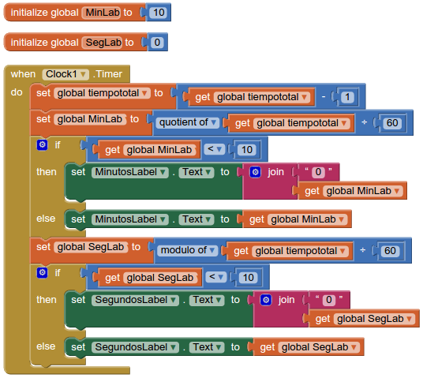

The final countdown
Objetivos
Modificar el programa de la sección anterior (Cronómetro) para convertirlo en un temporizador (un reloj que cuenta para atrás).
Lo que no podremos conseguir con la aplicación es que la pantalla no se apague cuando cumpla el screen timeout de nuestro dispositivo.
Actividad
Entra en AppInventor y abre el proyecto de la sección anterior "Cronometro".
Ve al menú "Projects" y elige la opción "Save project as", ponle como nombre al nuevo proyecto "Cuentaatras".
Borra las etiquetas "HorasLabel" y "DosPuntosLabel1". Vamos a crear un reloj que solo descontará usando minutos y segundos.
Para simplificar, de momento vamos a hacer que nuestro reloj descuente desde 10 minutos, por ello cambia la etiqueta inicial de "MinutosLabel" a "10":
Ve al apartado "Blocks", verás que han desaparecido varios bloques de instrucciones de "HorasLabel". Vamos a cambiar los programas para que nuestro reloj descuente. Más adelante se propondrá como ampliación poder fijar el tiempo de los minutos y segundos que queremos que temporice. De momento vamos a inicializar la variable "tiempototal" a los segundos correspondientes a 10 minutos:
Si te fijas el botón "StartStopButton" no cambia en nada su funcionamiento cuando hacemos click. Pone en marcha o para el temporizador y cambia los letreros del botón.
El botón "ResetButton" si que va a cambiar un poco cuando hacemos click en él. Las etiquetas del reloj ya no son "00:00" sino "10:00" y además la variable "tiempototal" no cuenta desde 0 sino que tiene los segundos de 10 minutos.
Para acabar en el evento "When Click1.Timer" debemos eliminar el "if ... then ... else" que correspondia a "HorasLabel" y que se habrá quedado vacío al borrar esa etiqueta. También tenemos que hacer que la variable "tiempototal" descuente 1 en vez de sumar 1 cada vez que llamemos a este evento. Nuestro programa quedaría:
Vamos a modificar un poco ese programa. En primer lugar vamos a hacer la ampliación propuesta en la sección anterior de dejarlo un poco más limpio usando variables para no repetir muchas veces las mismas operaciones matemáticas. Creamos dos variables "MinLab" y "SegLab" y las usamos así:

Prueba nuestra aplicación. Intenta dejarla llegar hasta 00:00 en la cuenta, ¿qué sucede?
Si te fijas nuestro temporizador no comprueba que la variable "tiempototal" no tome valores negativos (sigue restando 1 después de llegar a 0) por ello aparecen tiempos negativos. Modificamos el evento "Timer" para hacer esa comprobación:
¿Que tal ahora?
Ampliación
Esta ampliación puede ser un poco complicada, pero puede hacer mucho más útil nuestro reloj para la cuenta atrás. Consiste en modificar el programa anterior para que el usuario pueda fijar los minutos y segundos a partir de los cuales contar.
Inicialmente, siempre que arranquemos el programa, contará desde 10:00 minutos por defecto.
Inserta de manera organizada (te dejo a tí el diseño) dos etiquetas, dos cajas de texto y dos botones (o uno, pero esa modificación la pensarás tú) al lado. Renómbralas de una manera adecuada para entenderte a la hora de programar.
En esas cajas de texto el usuario introducirá los minutos y segundos deseados y cuando pulse los botones se fijará un nuevo tiempo. Cuidado con el botón "ResetButton" que ahora también debe modificar sus acciones cuando hacemos click en él.
¿Te animas a acabarlo tú? Tal vez debas hacer muchas pruebas hasta que consigas que todo vaya bien, pero ¡ánimo! puedes conseguir un reloj de cuenta atrás con bastante utilidad.
Ampliación
Nuestro reloj de cuenta atrás puede servir para alguien que quiera temporizarse cuando vaya a impartir una clase o dar un discurso (si te fijas funciona hasta poniendo el teléfono en horizontal).
Pero tal vez los números son un poco pequeños para verlos si estás a cierta distancia. Introduce un componente "Slider" para poder seleccionar rápidamente el tamaño con el que se muestra el reloj. Consistirá en cambiar el "FontSize" de "MinutosLabel", "DosPuntosLabel" y "SegundosLabel".
Cambia también los colores de nuestra aplicación para que sea más agradable verla, por ejemplo, invirtiendo los colores (fondo negro y números en blanco) ya conseguirás una visión mejor. Prueba tú los colores que creas convenientes.
Obra publicada con Licencia Creative Commons Reconocimiento No comercial Compartir igual 3.0

Programando en AppInventor por Francisco Nevado Montero se distribuye bajo una Licencia Creative Commons Atribución-NoComercial-CompartirIgual 4.0 Internacional.